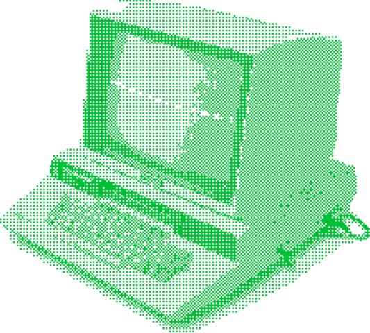

[-이과를 위한 코딩의 필요충분조건-]
2026 데브온과 함께하실 분을 구합니다.
_
최근 스탠퍼드 컴퓨터 공학 수업에서 AI만을 이용해 코딩을 하는 내용이 나와 충격을 주었습니다. 이제 AI를 아예 사용하지 않는 것은 비효율적일 뿐입니다. 우리는 AI를 효과적으로 활용하되, 그것을 활용할 수 있는 역량을 만들어 주는 것을 목표로 합니다. 어차피 코딩 도구를 다룰 줄 모르고, 코드를 읽을 줄 모르면 코드의 실용성은 많이 떨어질 뿐더러, 아무리 좋은 AI도 본인의 의도를 파악하는 데에는 무리가 있거든요. 우리는 AI를 잘 사용하는 사람이 됩시다. 이 사이트 또한 AI와 함께 제작했습니다.
ACA, SERAPH같은 대기업 동아리는 많은 사람들을 관리하고, 단체로 움직입니다. 하지만 우리는 개인의 의견에 경청하고 똘똘 뭉친 더 소속감 있는 동아리가 될 것입니다.
컴공만 데브온에 와야 하는게 아닙니다. 코딩은 시뮬레이션, 데이터 분석, 자동화 등 다양한 분야에 활용됩니다. 생기부에 자신의 진로와 코딩을 버무리면 아주 맛있는 생기부가 되겠죠. 경제는 데이터 분석, 물리와 화학은 시뮬레이션, 화학은 자동화 등등. 이과이지만 아직 자세한 진로를 정하지 못하겠다면, 데브온은 여러분을 위한 좋은 선택지입니다 ♥️
아래 양식을 작성하여 제출해 주세요. (12.20 - 1월 中)